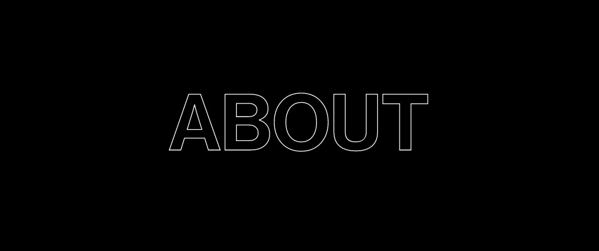

制作意図
企画
海外ドラマ「Strangerthings」の世界を基にデザインを制作しました。
画像は、公式のものを使用すると簡単に世界観が出せてしまうので公式のものは使用しないことをルールとして、自由な発想でどれだけ世界観を表現できるかが課題となりました。
デザイン
全体の雰囲気は黒を基調とし、「Strangerthings」の得体の知れない不気味な感じを表現することを目指しました。
また、「Strangerthings」にも数多ある80年代映画のオマージュも取り入れました。
コーディング
コーディングについては、ゆったりとしたローカルな休息をイメージさせるために少しゆっくりめのアニメーションを設定したり、風通しの良い導線を意識したレイアウトにしたりしています。
見出しの文字は、jQueryとSVGで手書きしているようなアニメーションを設定して、アイキャッチになるのと併せて手作りのようなあたたかみを演出するようにしました。
スマホ、PCどちらも流入があるかと考えられるため、レスポンシブ対応をしています。 また、ブラウザサイズによって異なるサイズの画像を出しわけすることで、表示速度を高速化しています。
参考
野村證券 金融経済研究所「女性の労働参加が後押しするインターネット消費」- phttps://www.nomuraholdings.com/jp/services/zaikai/journal/pdf/w_201807_02.pdf
野村総合研究所(NRI) 「ニュースリリース_8回目の「生活者１万人アンケート調査」を実施」- https://webtan.impress.co.jp/n/2018/11/13/31031
asahiグループホールディングス ハピ研 「ホームパーティをよくしますか？｜毎週アンケート」 - https://www.asahigroup-holdings.com/company/research/hapiken/maian/ 201710/00653/